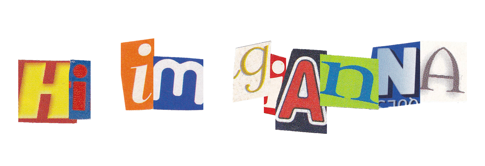
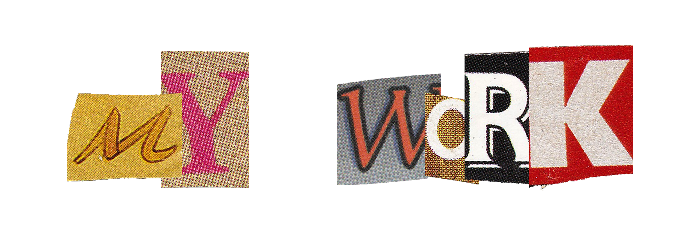

A computer engineer who designs structures in the real world and interfaces in the digital one

Accessible Components
Redesigned a dropdown menu to be more accessible
Zest Redesign
Redesigned an onboarding experience
New England Aquarium Redesign
Redesigned a website to address usability problems
Persona and Storyboarding
Redesigned a physical interface based on feedback